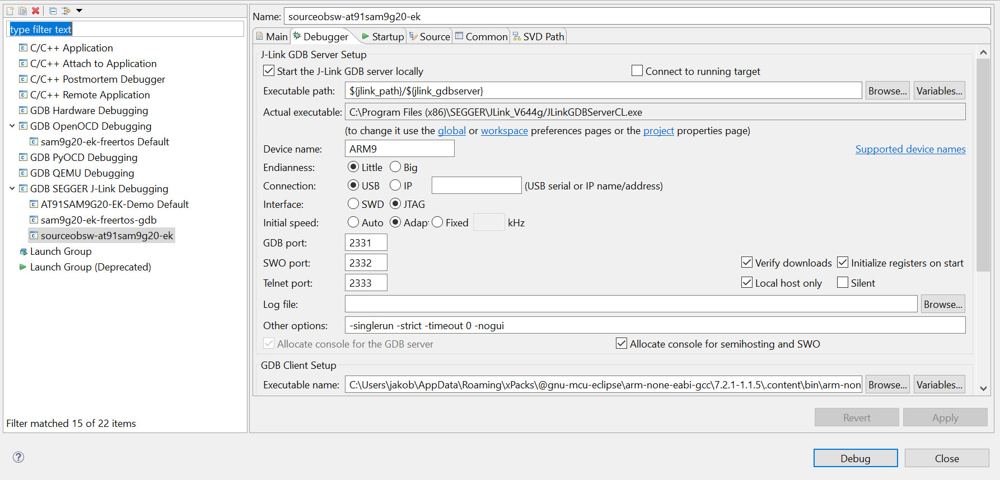

Source On-Board Software
General Information
Used development boards:
- STM32 Nucleo-144 H743ZI
- AT91SAM9G20-EK
Clone software and create OBSW binary
- Create directory for OBSW (e.g. with mkdir Source_OBSW). Note that make and git are required (installation guide below)
- Clone OBSW into this directory
> git clone https://git.ksat-stuttgart.de/source/sourceobsw.git
- Switch branch to desired branch (if not master branch)
- Import Flight Software Framework (FSFW)
> git submodule init
> git submodule update
- Run Makefile to create binaries. If running on ubuntu and .exe ending is problematic, supply NoExe=true additionally. Please note that there are different build options and configuration parameters for the make file available. An explanation and how to set up the Eclipse IDE for these configurations will be provided in a separate chapter. General command for AT91:
General command for STM32:
- Flash binary with OpenOCD/copy&paste for STM32 or with J-Link/SAM-BA for AT91. Refer to respective instructions.
Build Configurations
General Structure OBSW which is included in binary file
- General Sequence: Compile and link software -> flash generated binary to board -> Run or Debug
- Core files: Makefile, linker script, board startup assembler file and main file
- Makefile: Compile and link software with ARM Toolchain
- Linker Script: Used by makefile, maps input files to output file, control memory layout of binary file
- Board Startup file: Perform absolutely necessary configuration at start-up before branching to main.cpp
- Main: Configure board and start RTOS scheduler. Calls init_mission() which contains all missions tasks
- mission: Contains mission specific code which uses the Flight Software Framework (FSFW)
- framework: Contains FSFW
- boardtest: Board specific test files which will not be part of the Flight Software
- test: General test files which will not be part of the Flight Software
- config: Mission specific configuration of FSFW and additions. Contains object factory and IDs
- Bsp: Board Supply Package needed to run software on specific board
- Middlewares: Layer between application and hardware. Can be considered as part of the Bsp
- Drivers: Needed to run peripherals (e.g. I/O) on board. Can be considered as a part of Bsp
- freertos: Contains the RTOS used in the Flight Software
- lwIP: Contains the IP stack used for Ethernet communication
Additional tools
- doc: General documentation, doxygen
- generators: Exporter for objects, events, return values and packet definitions
- tmtc: Python TMTC script which is command line configured by now. PyCharm configuration provided.
Build Configurations and testing of Flight Software
The build can be configured in two ways. Currently, chosing between Serial Telemetry/Telecommand (TMTC) and Ethernet Communication and whether the toolchains have an .exe ending (Windows) can only be done via the second way.
- Set a make target
- Provide variables to the make call
Don't forget the use compile optimization by providing the -j parameter.
First way: Currently, following make targets are available:
- sdramCfg: Configure AT91 SDRAM on start-up. Required after each restart.
- clean: Clean the dependencies, binaries and includes of current system (STM32 or AT91) and Communication Interface (Serial RS232 or UDP Ethernet)
- hardclean: Clean the three mentioned folders for all systems and interfaces
- cleanbin: Clean all binaries
- debug: Additional FSFW debug messages
- virtual: Virtualized software interfaces replace real connected hardware
- virtual_debug: Combination of above two targets
- mission: Optimized build for mission. Not good for debugging.
Example call to build mission build:
Second way: The following variables can be set to configure the build in the make call.
- NoExe: Set to true if developing on Linux. Arm Toolchains on Windows require .exe ending
- MISSION: Set to true for mission build
- SERIAL: Chose between Serial and Ethernet Communication for TMTC
- VIRTUAL: Same as build target virtual
- DEBUG: Same as build target debug
Example call to build external hardware independent development build with serial communication on Linux:
make SERIAL=true NoExe=true VIRTUAL=true DEBUG=true all
Currently, there are two binary folders: One for the development binaries and one for the mission binaries. For the dependency and object folders, four different combinations are possible (two for the different comm interfaces and two for the binary types). Thus, if a different binary is needed, e.g. when switching from devel build to mission build, and all object files are already available, it is sufficient to clean the binaries with the cleanbin target and then rebuild the target build. Make will recognize that the object files are already available and link the new requires binary.
The provided TMTC has separate insructions It is possible to chose between serial communication via RS232 and Ethernet communication with UDP datagrams. For the serial communication, a USB to female RS232 cable can be used (or UART jumper wires..).
Instructions to set up Eclipse for these build targets are provided in the AT91 Getting Started chapter.
Setting up the Development Environment
Developing software on microcontrollers requires a lot of software tools and is generally more complicated than Desktop App Development. Tools like QEMU or docker can/will be used to simplify the proccess as they provide virtualization and encapsulation of the embedded environment without the need of countless software tools and real hardware. However, testing on the real hardware will still be very important to ensure the software runs successfully on the target environment (iOBC by ISIS) without any issues. The following instructions contain all required tools to set up a decent development environment on Windows and Linux (although Linux will always be the preferred development environment) to work with the hardware. Not all steps might be necessary depending on the experiences and already available tools of a new developer.
Installation Linux Subsystem (WSL) or any other command line program:
A command line program like WSL (Ubuntu Subsystem) or MSYS2 is necessary because of used tools make and useful for tools like git. An IDE like Eclipse for C/C++ is very useful and has been chosen for this project. Installation instructions for Ubuntu Subsystem.
- For installaton on windows, install Linux Subsystem (WSL in Windows Store) or similar command line programm (z.B. MSYS2/MinGW)
- Install git
> sudo apt-get install git
- Install Make
> sudo apt-get install make
- Install editor programm like vim or atom. Notepad++ can be used to but needs to be included in the Windows Environment Variables. After that, notepad++.exe can be called. (or an alias like np='notepad++.exe' can be used)
> sudo apt-get install vim
> sudo apt-get install atom
- An alias (shortcut) in ubuntu is very useful to navigate to the windows and/or development directories quickly. Any editor can be used to create an alias
Add new line
> alias shortcut="cd /mnt/c/Users/..."
Restart command line programm and test the alias by typing
- Update everything
> sudo apt-get update
> sudo apt-get upgrade
Installation Eclipse for C/C++ Developers on Windows
- Install JDK if not installed yet. Eclipse requires this
- Install Eclipse
- Go to Menu -> Help -> Eclipse Marketplace and search and install GNU MCU Eclipse
Setting up the ARM Toolchain on Windows
- Install NodeJS LTS. Add nodejs folder (e.g. "C:\Program Files\nodejs") to system variables. Test by running npm in command line
- Install xpm
> npm install --global xpm
- Install gnu-arm Toolchain for Eclipse (version can be specified)
> xpm install --global @xpack-dev-tools/arm-none-eabi-gcc@latest
> xpm install --global @xpack-dev-tools/windows-build-tools@latest
> xpm install --global @xpack-dev-tools/openocd@latest
- Add arm-none-eabi-gcc binary location in the xPack folder to system variables. These are usually located in C:\Users<...>\AppData\Roaming\xPacks@gnu-mcu-eclipse\arm-none-eabi-gcc<version>.content\bin
Required steps to build flight software in Eclipse for C/C++ Developers
- In Eclipse, import the souceobsw folder as a Makefile project
- Rightclick on sourceobsw, go to MCU and ensure the Arm Toolchain is found (xPack should be found automatically)
- Go to C/C++ Build -> Settings -> Toolchain, make sure the toolchain path is set correctly and press apply. Toolchain binaries should appear in includes in the folder structure (important for indexer)
- Rightclick on sourceobsw, properties, and use following build settings: GNU Toolchains for Ubuntu are needed for this ! WSL if Windows is used, special -f Flag if compiling for STM32 board
> (wsl) make (-f Makefile-STM32)(NoExe=true)
- Build acceleration can be turned on by going to Behaviour options and enabling parallel build.
git basics
Complicated git reference manual Better git reference manual General sequence to update:
- Please note that framework changes need to be commited and pushed automatically while being in the ksat_branch. git pull is not strictly necessary but ensures that any changes are included before pushing own content
git add .
git status
git commit -m "<commit message>"
git pull
git push
- Useful commands
git checkout <branch>
git diff (--staged)
git log
git merge <branch to be merged into current branch>
git remote update origin --prune
- Submodule Operations
git submodule init
git submodule update
git submodule sync
- Create Tag for important branches/merges and push them to gitlab
git tag -a <VersionTag> -m <VersionMessage>
git push origin tag <VersionTag>
- Create new branch (personal branch like _branch or feature branch _featureDetails). git checkout -b copies the state of the current branch
git checkout -b <new branch name>
git merge <any other branches to include>
- If you worked in wrong branch accidentally and want to apply changes to another branch
git stash
git checkout <target branch>
git stash apply
- Rename branch and remote branch
git checkout <target branch>
git branch -m new-name
git push origin -u new-name
git push -d origin old-name
- Delete branch and remote branch
git branch -d branch
git push origin -d remote_branch
- Add new submodule (= other repository) to repository. Run normal submodule sequence (3.) after this.
git submodule add <repository address> <folder name>
- Revert commit but keep changes (e.g. to stash them and apply them somewhere else)
git reset --soft HEAD~<numberOfCommitsToGoBack>
- git checkout is used to switch the currently used branch.
- git diff lists the differences of current branch to last local commit. Use --staged if new content was already added.
- git log lists the last few commits.
The submodule commands are useful because the FSFW is integrated as a submodule. Generally, a new branch is created for each new user and for each new feature. Name convention:
- [lastname]_[sourceobsw] as personal branch
- [lastname]_[featurename] as feature branch
The feature branch is merged into the master once it has been teste thoroughly. If work was done in wrong branch accidentaly, use git stash, git apply or git pop to move changes to different branch (see 6.). If there are wrong commits, consider 10. Merge requests can be performed with a GUI in GitLab. Consider using squash merges so the history is cleaner.
Code Documentation with Doxygen
Doxygen was used as a tool to generate the documentation. PDFs can not be produced yet because of a doxygen bug. The documentation can be accessed by finding the index.html file in doc/doxy/html/ To generate new documentation on Windows, following steps have to be taken:
- Install doxygen
- Install graphviz
- Add the graphviz binary folder to PATH/system variables
- Start doxyfile OPUS.doxyfile located in doc/doxy with the doxywizard gui to configure the documentation
- Generate documentation gui or run doxyfile with doxygen
AT91SAM9G20-EK getting started
Setting up eclipse to execute the makefile
- Right click on project sourceobsw-at91sam9g20-ek → Properties → C/C++ Build → use as build command: wsl make -j4

- Now software can be built by clicking the hammer symbol
Loading Software to AT91SAM9G20-EK
- Install J-Link ARM software from https://www.segger.com/downloads/jlink/#J-LinkSoftwareAndDocumentationPack (on windows)
- Check if arm-none-eabi-gdb.exe is found. Otherwise add path to system environement variables. Should already have been installed earlier by
xpm install --global @gnu-mcu-eclipse/arm-none-eabi-gcc
- Check jumpers on the board. Should be set as follows

- Connect J-Link to USB port of host computer
- Connect J-Link to AT91SAM9G20-EK
- Power on AT91SAM9G20-EK
- Execute make sdramCfg to configure the sdram. Can be done by creating a new target: Right click project → Build Targets → change build command to:
wsl make -j4

Start J-Link debugging session from Eclipse
- Right click on project → Debug As → Debug Configurations...
- In the shown menu right click GDB SEGGER J-Link Debugging → new
- Insert in field "C/C++ Application" sourceobsw-at91sam9g20-ek-sdram.elf file (located in bin directory)
- Set up the debugger as shown in the following pictures. Important is that the path to the JLinkGDBServerCL.exe and the arm-none-eabi-gdb.exe are set corretly
- Now, image can be written to the at91sam9g20-ek by clicking the "Debug"-button
- Open up Arduino IDE or Puttty with baud rate 115200 to read debug output Main

Debugger
 
Startup


Setting up Eclipse environment for build targets
Example environment,
Environment uses the previously mentioned build targets. Build targets can be created by right clicking on sourceobsw -> Build Target -> Create. Also make sure the toolchain is included like seen in the following picture. 
Example Auto Build Configuration.


STM32 Nucleo-144 H743ZI Getting Started
- Install and set up Eclipse with Gnu MCU Eclipse as specified
- Set up OpenOCD. In Eclipse, go to Window -> Preferences -> MCU and set the respective Toolchains for Global Arm Toolchain Path and Global OpenOCD Path. xPacks installation should be recognized
- Create Debug configuration in eclipse with OpenOCD as tools and Check whether path to OpenOCD.exe was found, if not: add manually
- Add to debug configuration: -f "board/st_nucleo_h743zi.cfg" oder the right configuration for the used board (can be found in board/ folder of OpenOCD9)
- OpenOCD configuration GDB settings: Look for arm-none-eabi-gdb.exe in arm-none-eabi-gcc folder (location of xPack should be seen above) and add full path to GDB settings.
- Install USB Driver for ST-Link module: STSW-LINK009
- Run Debugger with OpenOCD configuration. Board is flashed automatically
There is a possible race condition (error localhost:3333: No connection could be made because the target machine actively refused it.) If this is the case, add the following line to the GDB Client Setup command in the OpenOCD debug configuration: shell sleep 1
Beispiel FSFW auf STM32HZ43ZIT6 Nucleo-144
- verwendet STM32Cube HAL Lib für Hardwareinitialisierung
- Beispiele für FSFW Objekte (siehe init_mission.cpp)
- UART Schnittstelle konfiguriert und print Funktion implementiert, Nachrichten können über ein Terminalprogramm gelesen werden (Putty, Eclipse, Arduino IDE). Dabei Serial Input auswählen, baud rate = 9600
- Netzwerkschnittstelle konfiguriert und UDP Echo Task implementiert, schickt genau das was empfangen wurde wieder zurück, siehe UdpReceiveTask.cpp, auf Basis von LwIP und der raw API
- Echoserver wurde unter Windows getestet mit EchoTool und Wireshark. Beispiel zur Verwendung von EchoTool: echotool IP_address /p udp /r 7 /l 2008 /n 15 /t 2 /d Testing LwIP UDP echo server. Mit Wireshark kann dann die Antwort "Testing LwIP UDP echo server" gelesen werden
- Für Linux basierstes OS mit Netcat (getestet mit Raspbian) senden mit:
> sudo nc -u IP_Adresse 7
d.h. Server Port ist 7 empfangen mit:
d.h. Server sendet an Port 2008
- Oder mit Python Skript im python_telecommand Ordner
- Anwendung wartet kurz auf die Zuweisung einer IP Adresse per DHCP. -Sollte kein DHCP Server vorhanden sein wird automatisch die statische IP Adresse, definiert in main.h, gesetzt. Die IP Adresse wird über die UART Schnittstelle ausgegeben.
Common errors and crash causes in C++/C and basic concepts
In C/C++, the programmer is given a lot of power over how to use the given hardware without abstraction layers like in other high level languages like Python or Java. Not knowing how to use this power properly leads to undefined behaviour in many cases. TLDR: In C/C++, one often gets crashes where the root of the problematic is difficult to find. Memory allocation is a powerful tool which can also lead to many difficult-to-track problems at run-time because any allocated memory needs to be freed. As such, it should be avoided in the Flight Software, unless it is an object that gets only initialized at the start of the program once. Here is a list of common errors (please correct if anything is wrong...)
- Avoid dynamic memory allocation during run-time (e.g. in performOperation() method). the keyword new allocated dynamically and must be followed by a delete eventually. Try to use static/local variables where possible and/or initialize arrays or buffers with a maximum size at class instantiation. std libraries and functions like map and vector use dynamic memory allocation !
- Uninitialized variables can lead to undefined behaviour, especially in optimized builds ! It is preferrable to always initialize variables. It is perfectly possible that code works with uninitialized variables but some compiler optimizations can lead to undefined behaviour where debug code previously worked.
- When initializing pointers, be careful with NULL pointer initializations ! E.g. dereferencing a NULL pointer leads to a NULL-Pointer exception (crash 0x4). In general, accessing or dereferencing any forbidden memory areas leads to undefined behaviour/crashes.
- One should get familiar with the concept of pointers and OOP when working with the flight software. Pointers are uses extensively for buffered data (a buffer is basically an array of bytes). A pointer is always just an address to a memory location, not an array/list like in other languages like Python ! Therefore, when passing buffered data in C/C++, the size of the data is always needed in addition to the pointer to the start of the buffered data.